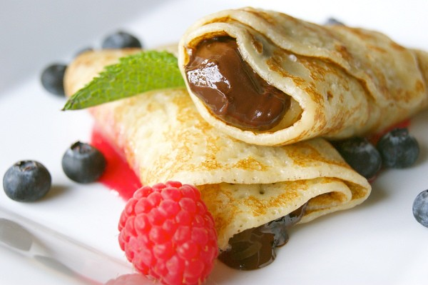

Home
Crepes

Descripcion
tortita francesa muy fina, hecha de una masa líquida de harina, leche y huevos, cocinada en sartén hasta formar un disco delgado que se sirve doblada o enrollada, rellena de ingredientes dulces (frutas, Nutella, azúcar) o salados (jamón, queso, pollo)
Ingredientes
- HUevos
- Harina
- Leche
- Azucar
- sal
- Ralladura de limón al gusto
- Esencia de vainilla al gusto
- Mantequilla o aceite para cocinar
Steps
- Ponga la harina, los huevos, el azúcar, la vainilla, y 1 taza de leche en un tazón grande.
- Utilice un batidor de mano, una batidora eléctrica, una licuadora normal o de inmersión para combinar y mezclar todos los ingredientes hasta que tenga una masa suave.
- Añada las 2 tazas restantes de leche y mezcle hasta que la masa quede sin grumos. Si esta preparando la masa de las crepas de antemano en este momento se puede refrigerar hasta el momento de cocinar las crepas. Se agrega la mantequilla derretida y se vuelve a mezclar (con una cuchara) justo al empezar a cocinarlas.
- En la sartén que va a utilizar para los crepes o crepas, derrita la mantequilla a fuego lento. A continuación, vierta la mantequilla derretida en un tazón pequeño y deje que se enfríe un poco. Luego agrega esta mantequilla a la masa de las crepas y mezcle bien. Su sartén quedará engrasada y lista para cocinar la primera crepa.
- Caliente la sartén a fuego medio. Cada estufa y sartén son diferentes, así que cada quien tiene que encontrar el nivel ideal de la temperatura. Generalmente, para una estufa de gas es entre el 50% y el 75% del máximo.
- Use una cuchara sopera grande (o media taza de medir) para verter la masa en la sartén con una mano, mientras sostiene la sartén con la otra mano, luego rápidamente vaya inclinando la sartén los lados para que la masa de la crepa quede distribuida en toda la superficie plana de la sartén.
- Se cocina el primer lado de la crepa durante aproximadamente un minuto o hasta que los bordes de la crepa se empiezan a dorar. Use una espátula plana para verificar y voltear la crepa. Deslice la espátula plana suavemente debajo de la crepa, voltéela (use su mano con cuidado si es necesario para ayudar a darle vuelta) y cocínela en el otro lado durante unos 15 a 25 segundos. Retire la crepa de la sartén y póngala en un plato. Repita el proceso hasta que haya terminado con toda la masa.
- Las crepas se pueden servir inmediatamente con su elección de rellenos.